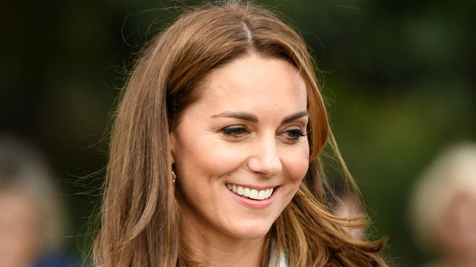
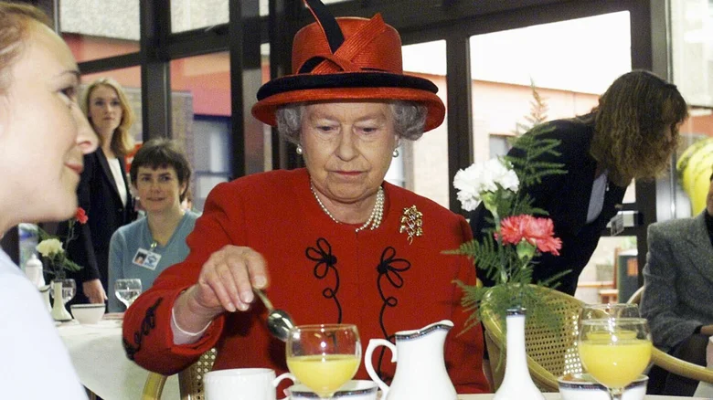
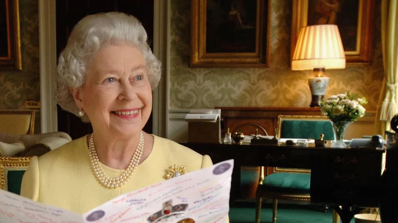
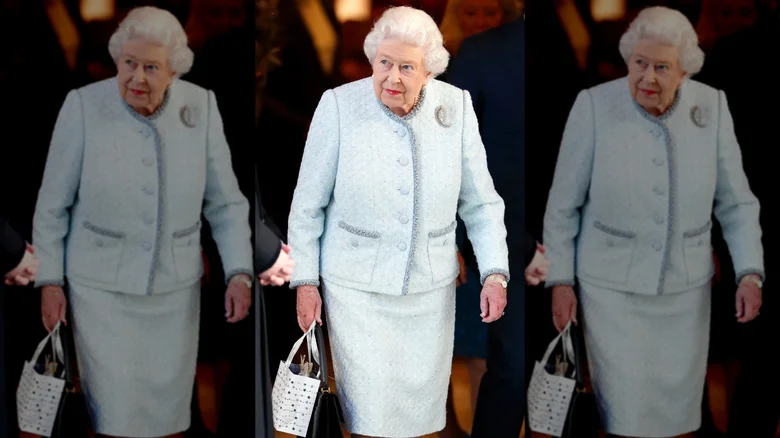
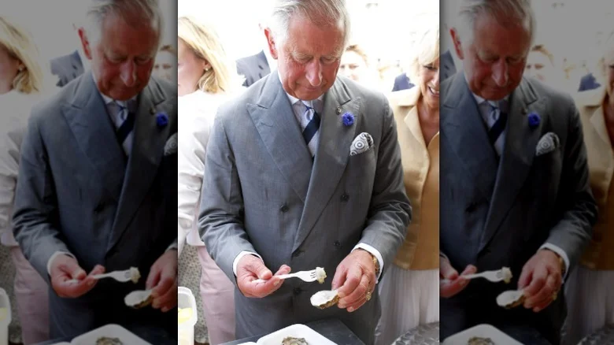
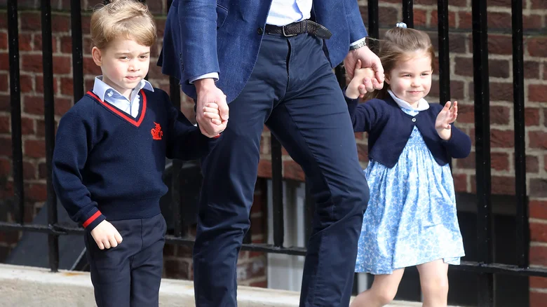
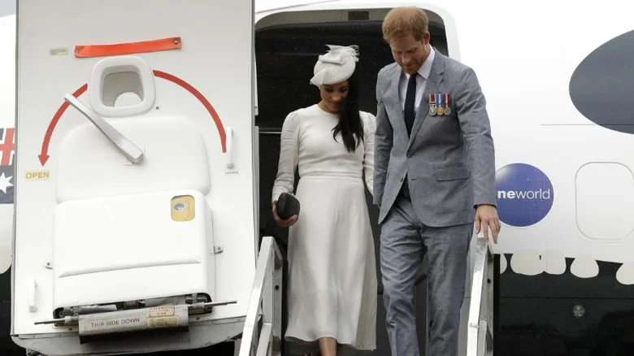
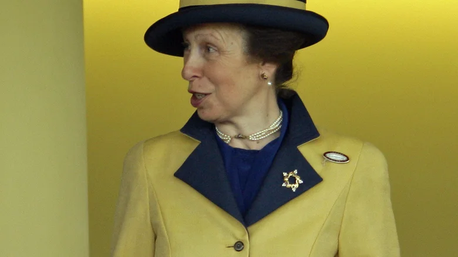

MARCH 13, 2023
The British royal family has every opportunity to live a frivolous lifestyle with their designer duds, crown jewels, and dozens of homes, which include the nearly 830,000-square-foot Buckingham Palace and Windsor Castle, the oldest and biggest inhabited castle in the world. However, don't make assumptions about how lavish their everyday lives are behind closed doors, as many of the senior royals have surprisingly frugal habits.
Queen Elizabeth II, for instance, was notorious for having a waste-not, want-not mantra. This isn't surprising, considering she lived through both world wars. The British head of state could afford just about anything she wanted, yet she had many penny-pinching ways. "The Queen has never been an extravagant person," royal historian Sir Roy Strong told the Daily Express. "She was 13 when the Second World War began, so her formative years were hugely shaped by growing up in the shadow of the conflict."
King Charles III has clearly picked up on some of his mother's habits. The king regularly talks about the importance of environmental sustainability and being good to the planet, which has led him to embrace frugality in some ways. However, the late queen and the new king aren't the only penny-pinchers in the family.
Princess Catherine is a thrifty shopper
Catherine, Princess of Wales, is regularly photographed wearing elegant dresses and skirts accessorized with brightly colored fascinators and gleaming crown jewels. However, she's also known for sporting looks from affordable retailers.
After the 2012 Diamond Jubilee Tour, Sadiah Bte Shahal, the Second Minister for Foreign Affairs of Singapore's wife, revealed some of what she can Catherine discussed. "We talked about the UK and particularly about shopping at Bicester," she told the Mirror. "I said I've been there and I love it and she said she does as well." Bicester Village is known as a discount designer outlet mall — so it's safe to say the princess loves a good bargain.
The following year, at an outing at Warner Brothers studios with her husband Prince William and brother-in-law Prince Harry, she donned a $45 black-and-white polka dot Topshop dress. Some years later at a charity polo match, she sported a $52 striped off-the-shoulder Zara summer dress. More recently, Catherine donned an off-white ribbed turtleneck sweater from H&M, which she wore during a stop on a 2022 tour of Denmark. The sweater retails for just $29.99.
While researching for his book, "Bargain Fever: How to Shop in a Discounted World," Mark Ellwood spoke to an employee at Reiss outlet and confirmed that Catherine likes to shop there as well. The author revealed some of his conversation with the employee to the Daily Mail: "Kate Middleton — she's in here all the time. You look up and there'll be Kate and her same two friends going through the 60 percent off rack. You have no idea she's there and security must be outside, but she comes in all the time.'"
Queen Elizabeth II often ate cereal for breakfast
Queen Elizabeth II was known for her exceptional grace and loyalty to the crown — and for eating fruit off of diamond-encrusted plates. However, her majesty also had many surprisingly frugal tendencies. Despite having a cushy bank account that would've entitled her to have just about anything she wanted served on a silver platter, the queen opted for simple morning meals. "Some Kellogg's cereal from a plastic container, which she'd serve herself. And some Darjeeling tea," McGrady told Marie Claire. This is not too surprising, being that Elizabeth was "not a foodie," McGrady told The Telegraph.
The former chef says that while the queen knew how to eat off the finest china, she also had very normal habits. "People always say, 'Oh, the Queen must eat off gold plates with gold knives and forks.' Yes, sometimes ... but at Balmoral she'd eat fruit from a plastic yellow tupperware container," McGrady revealed.
The queen's heirs inherited her habit of switching lights off
When your home has 775 rooms, including 188 staff bedrooms and 78 bathrooms, you should probably just accept the fact that your electric bill is going to be high. However, Queen Elizabeth II had no problem tightening her purse strings to keep the palace's energy bill as low as possible. A Buckingham Palace staffer told the Financial Times the Queen would go around the palace turning off any lights that weren't in use. She also had signs put up throughout the palace that read, "The attention is drawn of all members of staff to the need to switch off unwanted lights. By Order of The Master of The Household."
Prince Harry revealed in the BBC One documentary "Prince, Son and Heir: Charles at 70" that their father, King Charles III, is similarly "a stickler for turning lights off." Harry continued, saying, "And that's now something that I'm obsessed with as well." William, too, admitted he is the same way.
Prior to her death, the queen seemed to do all that she could to keep energy expenses low. While Buckingham Palace runs on 40,000 lights, Elizabeth banned lightbulbs over 40 watts, according to the Daily Express.
Queen Elizabeth II used a space heater to warm her residences

Picture this: You arrive at Buckingham Palace to meet with Queen Elizabeth II, and as you approach the luxurious, ornate, high-ceilinged Audience Room, you glance around at the luxurious furniture, priceless artwork, and intricate carpeting. And then your eyes land on a ... space heater?
Instead of cranking up the central heat, the queen became known for using a space heater to help keep her residences warm. She clearly wasn't embarrassed by it, as the small appliance was seen in many published photos, including meetings with foreign dignitaries.
In February 2013, for example, Elizabeth welcomed Mike Rann, the Australian High Commissioner, and his wife, Sasha Rann, at Buckingham Palace, while a space heater was situated in the fireplace to warm the room. In March 2018, the queen was again photographed using a space heater — this time at Windsor Palace when meeting with the President of Estonia. Among the ornate mirrors, lamps, and gold accent furniture in the palatial room sat a small, inexpensive gray space heater.
Reusing wrapping paper was a royal tradition of the queen
During the holidays, most people enjoy the excitement of tearing open a perfectly wrapped present in the hopes of seeing an item they've been yearning for all year. It's common practice for people to tear open a gift and dispose of the wrapping paper. Queen Elizabeth II was not one of these people, though. While British citizens throw away more than 100 million rolls of wrapping paper each year, sources say the queen was a saver, not a tosser, when it came to gift wrap.
Author Kate Williams wrote in her book, "Young Elizabeth: The Making Of Our Queen," that the queen liked to save gift wrap so it could be reused on future occasions. Going back to that waste-not, want-not mantra, Williams wrote of the queen, "After Christmas, Elizabeth would collect up the wrapping paper and ribbons and would smooth them out to be saved." Williams shared that the queen encouraged her family to avoid exchanging extravagant gifts.
King Charles III likes to pack a doggie bag
King Charles III may be a monarch with riches that the average person could only dream of having, yet, inside sources say the king likes to pack up his leftover food in to-go boxes instead of throwing it away.
In Catherine Mayer's book, "Charles: The Heart of a King," Charles' former private secretary, Clive Alderton, is quoted as saying, "I've rarely met someone who is so frugal, not in the sense of meanness but an absolute allergy to waste, and in particular waste of food." He continued, saying, "He gets any leftovers wrapped up and brought back for his next meal, and the next one."
Former royal chef Carolyn Robb corroborated these claims telling Racked that the former prince was "always very thrifty and economical." Robb spilled the royal tea, adding, "If we made roasted lamb and there were leftovers, we'd probably go and make Shephard's pie the next night."
Prince William and Princess Catherine's children wear hand-me-downs
Prince William and Princess Catherine are the parents of three young children, Prince George, Princess Charlotte, and Prince Louis. While all three kids are usually dressed to the nines, the royal couple has been known to dress the young royals in hand-me-down clothing on occasion, and it's usually during memorable occasions.
Wearing your older siblings' clothing is a rite of passage for most kids, and apparently, the royals aren't too good to adopt this thrifty tradition. For instance, Princess Charlotte was photographed wearing a $52 blue cardigan from the Spanish brand Fina Ejerique while visiting with her newborn brother, Prince Louis, just after he was born. Social media sleuths were quick to pick up on the fact that Prince George wore an identical-looking cardigan in a 2016 official photo shoot with Annie Leibovitz to commemorate Queen Elizabeth II's 90th birthday.
In a 2020 series of photographs released by the Prince and Princess of Wales, Louis is seen wearing a blue merino wool jumper from the brand Wild & Gorgeous — Prince George was photographed wearing that same jumper during a 2016 tour of Canada with his parents. The royal parents did switch up the look on the two boys, opting to pair the jumper with red shorts for Prince George and navy shorts and knee socks for Prince Louis.
Clothes aren't the only thing the royal kids hand down to each other, though. "A lot of Charlotte's toys are hand-me-downs from George. Although she's definitely a girly girl, she also loves to play outside, just like George," an insider alleged to Us Weekly. "She's got one of his old scooters and also motorized Jeep she loves to drive around the patio in."
The royal children have bedroom furniture from IKEA

When you think of the future King of England, you probably don't envision his childhood bedroom set or homework desk coming from IKEA. Nevertheless, Prince William and Princess Catherine's children apparently have a few items from the Swedish home furnishings retailer.
On a 2018 visit to the national museum of architecture and design in Stockholm, the royal couple revealed to Marcus Engman, IKEA's head of design, that both Prince George and Princess Charlotte have furniture from the store.
This was, of course, music to the Ikea executive's ears, who told the Mirror, "I'm proud that we can suit everybody. That's what we want Ikea to be — for the many people of the world, both royalty and ordinary people." Prior to the royal meet-and-greet, Engman told the publication he was interested to know if the royal family had any of his company's furnishings. The Swedish royals have IKEA furniture, so he thought it was possible that the British royals do as well. Looks like he was right!
Prince Harry and Meghan Markle aren't above flying commercial – or even economy
The Duke and Duchess of Sussex are known for taking commercial flights. One would think the couple would do their best to leverage the most luxurious method of transportation available to them in the most private and secure way possible; however, that is not always the case.
In 2017, prior to stepping away from his duties as a working royal, Prince Harry was photographed flying premium economy on a Virgin Atlantic flight from Gatwick to Montego Bay, Jamaica for a friend's wedding. This wasn't the first time he'd flown this way. On their way to ring in 2018 in the French Riveria, Harry and then-fiancée Meghan Markle flew economy on British Airways. Sources on the flight told the Daily Mail that the couple and three bodyguards took up three rows in the back of the plane ... and sat next to the toilets.
In November 2021, the couple caused a stir on social media when they reportedly flew commercial from New York back to their home in Los Angeles. A passenger on the plane shared the experience on social media, writing, "Ok this might sound unbelievable, and I couldn't get a good picture and I get you can say this could literally be anyone....BUT....Prince Harry and Meghan were on our flight to LA last night!"
Princess Anne may be the most frugal royal of them all
Many of the royals have frugal habits; however, none of them seem as thrifty as King Charles III's sister, Princess Anne. You may recognize the Princess Royal for her stellar wardrobe collection, but many don't realize that Anne's clothing is frequently recycled, and some items are even older than her daughter, Zara Tindall.
During the 2015 Royal Ascot, Anne sported a yellow coat and belted printed dress — but that was far from the first time she wore the ensemble, the Daily Mail reported. Decades earlier, in 1980, she wore the outfit while waving to well-wishers from the balcony of Buckingham Palace. And, ye, it still fit her like a glove.
Clothing isn't the only area of Anne's life in which the princess is thrifty. On a 2022 tour to Australia and Papa New Guinea, the royal not only traveled commercially and with a very limited staff, but she also stayed in a budget hotel, packed her own bags, and did her own makeup and hair, according to My London. You can't help but love Princess Anne's no-fuss, penny-pinching outlook.
More Portfolio Items


Grandparents raising grandchildren
Dec 12, 2021

Why These Real Housewives Quit
July 9, 2022

When the water runs dry
Feb 1, 2020


The Man who Broke the Sound Barrier: The Fastest Man
Alive
December 8, 2020

UMWA President Talks Biden’s Energy Plans
Mar 6, 2021